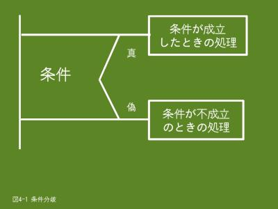

4. 条件を判定して処理を振り分ける条件分岐（1/2）
4.1 条件分岐とは
- 
- 【図４-１】条件分岐
前のページで肥満度（BMI）を算出するプログラムを例題として取り上げましたが、BMIの値が25以上の場合は太り過ぎだといわれています。
そこで、算出したBMIの値が25以上の場合に「太りすぎです」のようなメッセージを出力したい場合、「BMIの値は25以上」の条件の真偽により処理を振り分けます。これを条件分岐あるいは、条件判定と呼んでいます。
実際は、「BMIの値は25以上」の条件が真の場合のみ「太りすぎです」のメッセージを出力するようにします。
条件分岐のための文としてはif文とswitch文があります。
4.2 if文
if文は【図4-1】のように、条件の真偽により二つ以上の処理に振り分けるときに使用します。
4.2.1 形式
「if (条件)」の次に「条件が成立したときの処理」、「else」の次に「条件が不成立のときの処理」を指定します。
if (条件)
条件が成立したときの処理;
else
条件が不成立のときの処理;
- (条件)
- 括弧で括って条件式を指定します。条件式は【表4-1】の比較演算子を使って指定します。
- 条件が成立したときの処理
- 条件が成立（真）したときの処理を指定します。文が複数ある場合は{と}で括ってブロックにします。
- 条件が不成立のときの処理
- 条件が不成立（偽）のときの処理を指定します。文が複数ある場合は{と}で括ってブロックにします。
if文の形式として、次のようなこともあります。
- 条件が不成立のときの処理がない場合は、else以下を省略できます。また、条件が成立したときの処理がない場合は、文の最後を表す;（セミコロン）だけを指定します。
- 条件が成立したときの処理と条件が不成立のときの処理として、if文を指定できます。（if文の中にif文を指定できます）
- 条件が成立したときの処理と条件が不成立のときの処理は、文が複数ある場合はブロックにしますが、１行の場合もブロックにして構いません。後々の保守を考慮した場合、文の追加が考えられますのでブロックにしておくことをお薦めします。
4.2.2 比較演算子
通常、条件は下表の比較演算子を使って指定します。比較演算子の==は=が２つですので注意してください。
【表4-1】比較演算子一覧
| 演算子 | 意味 | 例題 |
|---|
| > | より大きい | bmi > 25.0
変数bmiの値が25.0より大きい（25.0は含まない）場合は真になります。 |
| >= | 以上 | bmi >= 25.0
変数bmiの値が25.0以上（25.0を含む）の場合は真になります。 |
| < | 未満
（より小さい） | bmi < 25.0
変数bmiの値が25.0より小さい（25.0は含まない）場合は真になります。 |
| <= | 以下 | bmi <= 25.0
変数bmiの値が25.0以下（25.0を含む）の場合は真になります。 |
| == | 等しい | bmi == 25.0 ← =が２つですので注意してください
変数bmiの値が25.0の場合は真になります。 |
| != | 等しくない | bmi != 25.0
変数bmiの値が25.0でない場合は真になります。 |
表中の「以上」は比較する数そのものを含め、それより大きい値で、「以下」は比較する数そのものを含め、それより小さい値です。また、「未満」は比較する数そのものは含めず、それより小さい値です。
4.2.3 例題
体重と身長を入力して肥満度を出力するプログラムです。肥満度の計算は次の計算式で行います
肥満度（BMI）＝ 体重（キログラム）÷ 身長（メートル）÷ 身長（メートル）
例題１
肥満度（BMI）の値が25.0以上の場合は「太りすぎです」メッセージも出力します。
#include <stdio.h>
int main()
{
double taijyu;
double sinchyo;
double bmi;
printf("肥満度(BMI)の計算を行います\n");
printf("体重(kg)と身長(m)を入力してください ==> ");
scanf("%lf%lf", &taijyu, &sinchyo);
/* 肥満度(BMI) = 体重(kg) / 身長(m) / 身長(m) */
bmi = taijyu / sinchyo / sinchyo;
printf("肥満度は%.2fです\n", bmi);
/* 太りすぎのチェック */
if (bmi >= 25.0)
{
printf("太りすぎです\n");
}
return 0;
}
$ ./ex04_1.prg ← 上記例題を実行します
肥満度(BMI)の計算を行います
体重(kg)と身長(m)を入力してください ==> 85 1.85
肥満度は24.84です
$ ./ex04_1.prg
肥満度(BMI)の計算を行います
体重(kg)と身長(m)を入力してください ==> 85 1.75
肥満度は27.76です
太りすぎです
$
- 16行目
- 変数bmiの値が25.0以上（25.0を含む）という条件です。
- 17〜19行目
- 条件が成立（真）したときの処理で、「太りすぎです」メッセージを出力します。1文ですので{と}で括ってブロックにしなくても構いません。
例題２
上記例題の場合、太りすぎ（25.0以上）しかチェックしていませんが、やせすぎ（18.5未満）もチェックします。
#include <stdio.h>
int main()
{
double taijyu;
double sinchyo;
double bmi;
printf("肥満度(BMI)の計算を行います\n");
printf("体重(kg)と身長(m)を入力してください ==> ");
scanf("%lf%lf", &taijyu, &sinchyo);
/* 肥満度(BMI) = 体重(kg) / 身長(m) / 身長(m) */
bmi = taijyu / sinchyo / sinchyo;
printf("肥満度は%.2fです\n", bmi);
/* BMIの値をチェック */
if (bmi < 18.5) /* やせすぎをチェック */
{
printf("やせすぎです\n");
}
else if (bmi >= 25.0) /* 太りすぎをチェック */
{
printf("太りすぎです\n");
}
else
{
printf("普通です\n");
}
return 0;
}
$ ./ex04_2.prg
肥満度(BMI)の計算を行います
体重(kg)と身長(m)を入力してください ==> 85.5 1.75
肥満度は27.92です
太りすぎです
$ ./ex04_2.prg
肥満度(BMI)の計算を行います
体重(kg)と身長(m)を入力してください ==> 55.5 1.75
肥満度は18.12です
やせすぎです
$ ./ex04_2.prg
肥満度(BMI)の計算を行います
体重(kg)と身長(m)を入力してください ==> 85.5 1.85
肥満度は24.98です
普通です
$
- 16行目
- 変数bmiの値が18.5未満（18.5は含まない）という条件です。
- 20行目
- 変数bmiの値が25.0以上（25.0を含む）という条件です。
- 24行目
- 上記のどちらの条件も成立しない場合、ここの処理を行います。